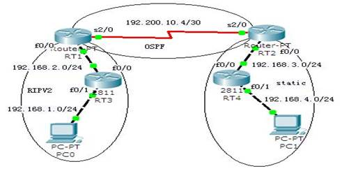

实训任务6：多路由协议配置

RT1的S2/0端口和RT2的S2/0端口运行OSPF，RT1的f0/0端口运行RIPv2，RT3运行RIPv2，RT2有指向RT4的192.168.4.0/24网段的静态路由，RT4使用默认静态路由指向RT2。需要在RT1和RT3之间重新分配OSPF和RIP路由，在RT2上重新分配静态路由。
1）路由器和PC机的基本配置
设备的名称、接口和IP等参数
| 设备名称 | IP 地址 | 子网掩码 | 默认网关 |
|---|---|---|---|
| PC0 | 192.168.1.2 | 255.255.255.0 | 192.168.1.1 |
| PC1 | 192.168.4.2 | 255.255.255.0 | 192.168.4.1 |
路由器RT1
Router(config)# host RT1
RT1(config)# int f0/0
RT1(config-if)# ip add 192.168.2.2 255.255.255.0
RT1(config-if)# no shut
RT1(config-if)# int s2/0
RT1(config-if)# ip add 192.200.10.5 255.255.255.252
RT1(config-if)# clock rate 64000
RT1(config-if)# no shut
路由器RT2
Router(config)# host RT2
RT2(config)# int f0/0
RT2(config-if)# ip add 192.168.3.2 255.255.255.0
RT2(config-if)# no shut
RT2(config-if)# int s2/0
RT2(config-if)# ip add 192.200.10.6 255.255.255.252
RT2(config-if)# no shut
路由器RT3
Router(config)# host RT3
RT3(config)# int f0/0
RT3(config-if)# ip add 192.168.2.1 255.255.255.0
RT3(config-if)# no shut
RT3(config-if)# int f0/1
RT3(config-if)# ip add 192.168.1.1 255.255.255.0
RT3(config-if)# no shut
路由器RT4
Router(config)# host RT4
RT4(config)# int f0/0
RT4(config-if)# ip add 192.168.3.1 255.255.255.0
RT4(config-if)# no shut
RT4(config-if)# int f0/1
RT4(config-if)#ip add 192.168.4.1 255.255.255.0
RT4(config-if)# no shut
2）按基本配置、路由配置和路由引入三个层次配置各路由器，每个层次配置完成后逐个查看各路由器的路由表，并测试PC0与PC1的连通性。
路由器RT1
RT1(config)# router ospf 100
RT1(config-router)# net 192.200.10.4 0.0.0.3 area 0
RT1(config)# router rip
RT1(config-router)# version 2
RT1(config-router)# net 192.168.2.0
路由器RT2
RT2(config)# router ospf 100
RT2(config-router)# net 192.200.10.4 0.0.0.3 area 0
RT2(config)# ip route 192.168.4.0 255.255.255.0 192.168.3.1
路由器RT3
RT3(config)# router rip
RT3(config-router)# version 2
RT3(config-router)# net 192.168.2.0
RT3(config-router)# net 192.168.1.0
路由器RT4
RT3(config)# ip route 0.0.0.0 0.0.0.0 192.168.3.2
路由器RT1
RT1# sh ip rout
路由器RT2
RT2# sh ip rou
路由器RT3
RT3# sh ip rou
路由器RT4
RT4# sh ip rout
PC0
PC> ping 192.168.4.2
结论：PC0、PC1互不通。
路由器RT1
RT1(config)# router ospf 100
RT1(config-router)# redistribute rip metric 1 subnets
RT1(config)# rout rip
RT1(config-router)# redistribute ospf 100 metric 1
路由器RT2
RT2(config)# router ospf 100
RT2(config-router)# redistribute connected subnets
RT2(config-router)# redistribute static subnets
路由器RT1
RT1# sh ip rou
路由器RT2
RT2# sh ip rou
路由器RT3
RT3# sh ip rou
路由器RT4
RT4# sh ip rout
PC0
PC> ping 192.168.4.2
结论：PC0、PC1互通。